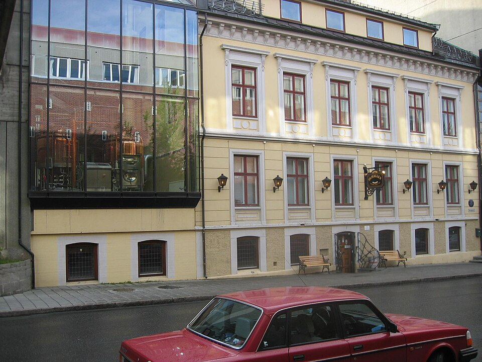
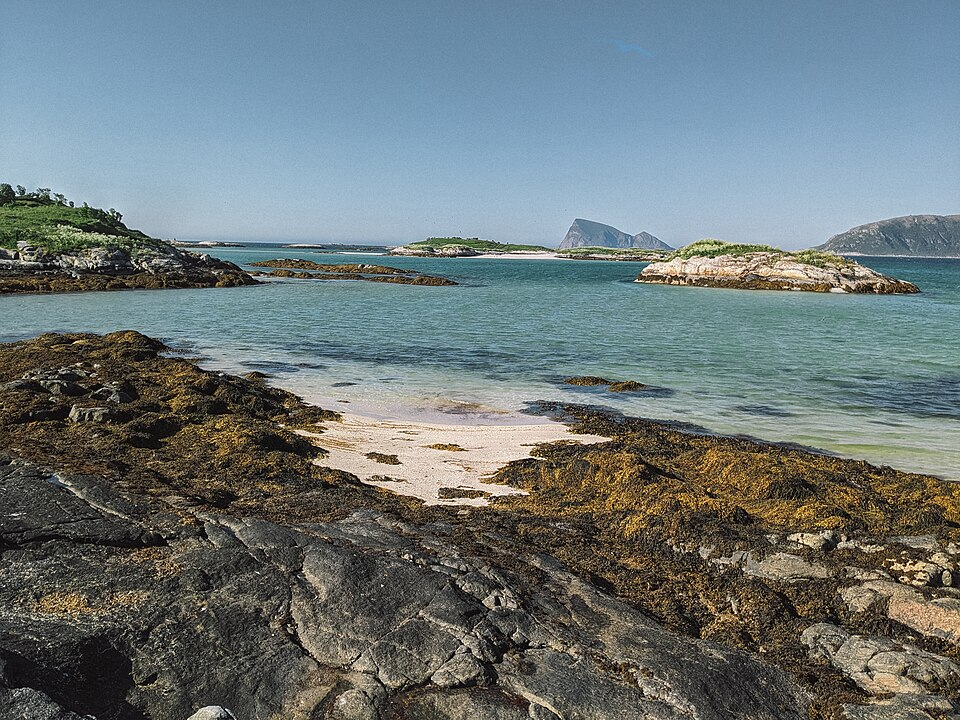
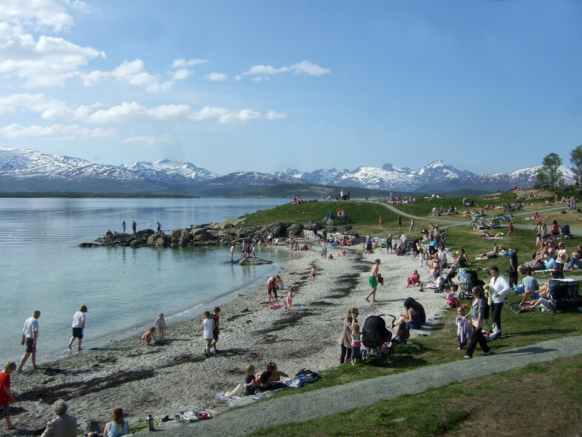
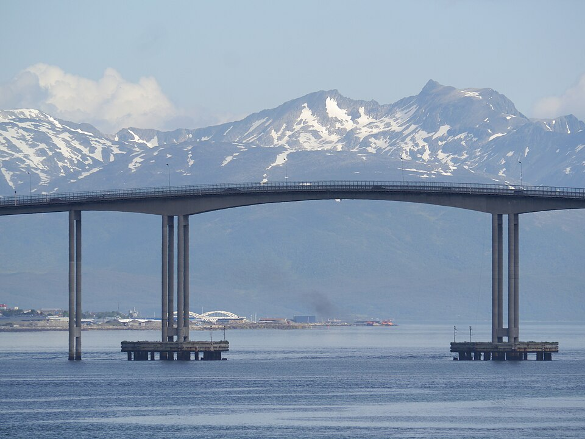
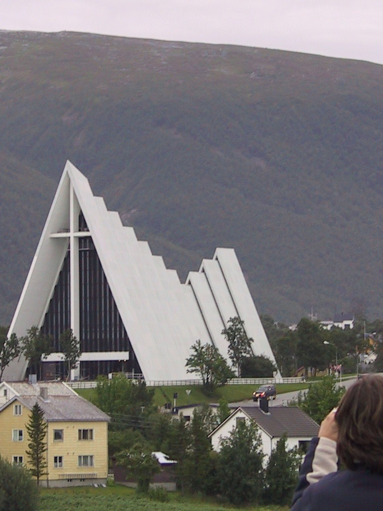

TRIP OVERVIEW
Day 1 – Harbour Promenade · Polar Museum · Northern Norwegian Art Museum
Day 2 – Tromsø Cathedral · Perspektivet Museum · Storgata · Mack Ølhallen
Day 3 – Sommarøy
Day 4 – Polaria · Arctic-Alpine Botanic Garden · Arctic University Museum · Telegrafbukta
Day 5 – Tromsøbrua · Tromsø Science Centre · Arctic Cathedral · Fjellheisen · Ersfjordbotn
Day 1
🏨 From Hotel: 🚶 2 min · 🚕 3 min → Harbour Promenade
1. Harbour Promenade
↳ The main quay along Tromsø's inner harbour — historic fishing vessels, the old Strandtorget fish market, and views across the water to the Arctic Cathedral and Tromsøbrua bridge. The clearest introduction to Tromsø's position as a working Arctic port.

🚶 7 min · 🚕 3 min → Polar Museum
2. Polar Museum
↳ Arctic exploration history housed in a red timber warehouse from 1830. The permanent exhibitions cover Nansen's early expeditions, Amundsen's Antarctic and Northeast Passage voyages, and the life of Svalbard seal hunters and trappers from the 18th to 20th century.
🏛️ Monday - Sunday 9:00am - 5:00pm
⏰ ~1 hr 30 min
🚶 9 min · 🚕 4 min
 1.jpg)
🚶 3 min · 🚕 3 min → Northern Norwegian Art Museum
3. Northern Norwegian Art Museum
↳ Northern Norway's principal art museum in a neoclassical harbour building from 1917. Collections span contemporary northern Norwegian painting, Sami art and craft, and rotating international shows. The permanent display traces northern Norwegian visual culture from 1814 to the present.
🏛️ Tuesday - Wednesday 11:00am - 5:00pm · Thursday 11:00am - 8:00pm · Friday - Sunday 11:00am - 5:00pm
🚫 Closed Monday
⏰ ~1 hr 30 min
🚶 2 min · 🚕 3 min

🚶 2 min · 🚕 3 min → hotel
Day 2
🏨 From Hotel: 🚶 10 min · 🚕 4 min → Tromsø Cathedral
1. Tromsø Cathedral
↳ The world's northernmost Protestant cathedral, designed in Gothic Revival style in 1861 by Christian Heinrich Grosch, built entirely from timber. Stained glass by Per Vigeland; altarpiece after Adolph Tidemand's Resurrection. One of the few large wooden churches still standing in Norway.
🏛️ Tuesday - Saturday 10:00am - 5:00pm · Sunday 10:00am - 2:00pm
🚫 Closed Monday
⏰ ~45 min
🆓 Free
🚶 10 min · 🚕 4 min

🚶 5 min · 🚕 3 min → Perspektivet Museum
2. Perspektivet Museum
↳ Photography and cultural history museum in a 19th-century mercantile building. Permanent exhibitions document everyday life in Tromsø and northern Norway across the past 150 years through original photographs, domestic objects, and archive material. Changing photography exhibitions run throughout the year.
🏛️ Tuesday - Friday 10:00am - 4:00pm · Saturday - Sunday 11:00am - 5:00pm
🚫 Closed Monday
⏰ ~1 hr 30 min
🚶 15 min · 🚕 5 min

🚶 10 min · 🚕 4 min → Storgata
3. Storgata
↳ Tromsø's main pedestrianised street, running through the city centre from the cathedral south to the harbour. Local shops, bakeries, and mid-century buildings alongside timber townhouses. The street marks the route south toward Mack Ølhallen and the old brewery quarter.

🚶 3 min · 🚕 3 min → Mack Ølhallen
4. Mack Ølhallen
↳ The world's northernmost large pub, operating since 1928 in the original Mack Brewery building. Seventy-two taps pour Mack's own Arctic ales, stouts, and seasonal beers in a cavernous wood-panelled hall. The Mack Brewery, founded in 1877, is the world's northernmost brewery still in production.
🏛️ Monday - Thursday 12:00pm - 12:30am · Friday - Saturday 12:00pm - 1:30am · Sunday 1:00pm - 6:00pm
⏰ ~1 hr 30 min
🆓 Free
🚶 12 min · 🚕 5 min

🚶 12 min · 🚕 5 min → hotel
Day 3
🏨 From Hotel: 🚕 45 min → Sommarøy
1. Sommarøy
↳ A small fishing island 36 km west of Tromsø, connected to the mainland by a bridge. Turquoise Arctic waters, white coral-sand beaches, and sharp peaks visible from the shoreline. In 2019 residents proposed abolishing clocks during summer — the midnight sun makes time redundant from May through July.

🚕 45 min → hotel
Day 4
🏨 From Hotel: 🚶 14 min · 🚕 5 min → Polaria
1. Polaria
↳ The world's northernmost aquarium, designed to resemble ice floes stacked by wind and opened in 1998. Live bearded seals, Arctic fish tanks, and a panoramic film on Svalbard wildlife and ecology. Seal feeding and training sessions run three times daily.
🏛️ Monday - Sunday 10:00am - 5:00pm
⏰ ~1 hr 30 min
🚶 14 min · 🚕 5 min

🚶 20 min · 🚕 7 min → Arctic-Alpine Botanic Garden
2. Arctic-Alpine Botanic Garden
↳ The world's northernmost botanical garden, established in 1994 on the University of Tromsø campus. Over 2,000 species of Arctic, alpine, and subarctic plants — cloudberries, mountain avens, Sami medicinal herbs, and rock gardens arranged by continent. Free and outdoors; best from June to August.
 01.jpg)
🚶 3 min · 🚕 3 min → Arctic University Museum of Norway
3. Arctic University Museum of Norway
↳ The natural and cultural history of northern Norway in eight permanent galleries. Highlights include High Arctic geology, an extensive Sami culture display with traditional clothing and tools, and exhibitions on Arctic flora and fauna. Part of UiT The Arctic University of Norway.
🏛️ Monday - Friday 10:00am - 6:00pm · Saturday - Sunday 11:00am - 5:00pm
⏰ ~2 hr
🚶 24 min · 🚕 7 min

🚶 25 min · 🚕 9 min → Telegrafbukta
4. Telegrafbukta
↳ Sandy beach at the southern tip of Tromsøya, facing the Tromsøysund strait and the mountains of Kvaløya beyond. Calm, shallow water and smooth rocks make it the city's most popular summer swimming spot. The name comes from the 19th-century telegraph station that once operated here.

🚕 8 min → hotel
Day 5
🏨 From Hotel: 🚶 16 min · 🚕 5 min → Tromsøbrua
1. Tromsøbrua
↳ The 1,016-metre suspension bridge connecting Tromsøya to the Tromsdalen mainland, opened in 1960. Walking across gives unobstructed views of the city, the surrounding fjords, and on clear days the peaks of Kvaløya. The bridge appears in nearly every photograph taken from the Fjellheisen summit.

🚶 12 min · 🚕 5 min → Tromsø Science Centre
2. Tromsø Science Centre
↳ Hands-on science museum on the university's Tromsdalen campus, with exhibits on aurora borealis, Arctic physics, and space science. The Northern Lights Planetarium runs dome shows with simulated and archival aurora footage — the closest substitute during summer when the sun never sets.
🏛️ Monday - Sunday 10:00am - 5:00pm
⏰ ~2 hr
🚶 25 min · 🚕 7 min

🚶 8 min · 🚕 3 min → Arctic Cathedral
3. Arctic Cathedral
↳ Designed by Jan Inge Hovig and completed in 1965, the Arctic Cathedral is Tromsø's defining landmark. The aluminium-triangle exterior refracts light like glacial ice. The interior's east-facing glass mosaic — one of Europe's largest at 140 m² — depicts the Second Coming in white, gold, and arctic-blue.
🏛️ Monday - Sunday 10:00am - 6:00pm
⏰ ~45 min
🚶 28 min · 🚕 8 min

🚶 15 min · 🚕 5 min → Fjellheisen
4. Fjellheisen
↳ The cable car ascends 421 metres to the summit of Storsteinen in four minutes, arriving at a platform overlooking Tromsø, the surrounding fjords, and — from late May through late July — the midnight sun above the horizon. The full geometry of Tromsøya's island position is clear from the top.

🚕 45 min → Ersfjordbotn
5. Ersfjordbotn
↳ A small farming village at the head of Ersfjorden on Kvaløya island, 40 km west of Tromsø. The surrounding peaks — Storsteinnestinden at 1,132 m — reflect in calm water. Widely considered one of the most photogenic fjord scenes in the region. The coastal return route along Rv862 passes several additional inlet views.

🚕 45 min → hotel
🗓️ Weekly Closures
Museums & Galleries · Closed Monday
📅 Tours
Viator
↳ Small-group minibus to Tromsøya's mountain viewpoints, the island-bridge archipelago, and the fjords west of the city. A local photographer leads the group and directs shots at each stopping point. Best visibility on clear days from June onwards.
🕐 8:00am · ⏳ 5 hr · 👥 small group
↳ Small-group minibus to Tromsøya's mountain viewpoints, the island-bridge archipelago, and the fjords west of the city. A local photographer leads the group and directs shots at each stopping point. Best visibility on clear days from June onwards.
🕐 8:00am · ⏳ 5 hr · 👥 small group
🚶 2 min · 🚕 3 min
↳ Small-group coastal drive across the bridges of Kvaløya, with stops above the fjord inlets. A scenic picnic lunch is served on the shoreline. The route passes through landscapes similar to Sommarøy but on a different island chain, combining well with Day 3.
🕐 9:00am · ⏳ 5-6 hr · 👥 small group
↳ Small-group coastal drive across the bridges of Kvaløya, with stops above the fjord inlets. A scenic picnic lunch is served on the shoreline. The route passes through landscapes similar to Sommarøy but on a different island chain, combining well with Day 3.
🕐 9:00am · ⏳ 5-6 hr · 👥 small group
🚶 2 min · 🚕 3 min
↳ Minibus fjord excursion with a focus on wildlife sighting — reindeer, sea eagles, and Arctic fox in season. A seaside lunch is included at a local lodge. A professional photographer accompanies the group and shares the captured images after the tour.
🕐 10:00am · ⏳ 6 hr · 👥 small group
↳ Minibus fjord excursion with a focus on wildlife sighting — reindeer, sea eagles, and Arctic fox in season. A seaside lunch is included at a local lodge. A professional photographer accompanies the group and shares the captured images after the tour.
🕐 10:00am · ⏳ 6 hr · 👥 small group
🚶 2 min · 🚕 3 min
↳ Walking tour through Tromsø's historic lanes with tastings of whale, reindeer, and salmon at local producers. The route follows the city's fishing and trading history, ending at the harbour market. Best introduction to Arctic food culture for first-time visitors.
🕐 11:30am · ⏳ 3 hr · 👥 small group
↳ Walking tour through Tromsø's historic lanes with tastings of whale, reindeer, and salmon at local producers. The route follows the city's fishing and trading history, ending at the harbour market. Best introduction to Arctic food culture for first-time visitors.
🕐 11:30am · ⏳ 3 hr · 👥 small group
🚶 6 min · 🚕 3 min
↳ Minibus drive through the western fjords of Tromsø municipality — photographic stops at Kaldjord and Ersfjordbotn before arriving on Sommarøy. Hot lunch included at a waterside cabin. Wildlife watch en route for reindeer, moose, and sea eagles.
🕐 10:00am · ⏳ 5 hr 30 min · 👥 small group
↳ Minibus drive through the western fjords of Tromsø municipality — photographic stops at Kaldjord and Ersfjordbotn before arriving on Sommarøy. Hot lunch included at a waterside cabin. Wildlife watch en route for reindeer, moose, and sea eagles.
🕐 10:00am · ⏳ 5 hr 30 min · 👥 small group
🚶 2 min · 🚕 3 min
GetYourGuide
📅 1. Tromsø: Fjords and Sommarøy Islands Tour with Salmon Picnic · GetYourGuide · 4.7⭐ · 4861+ reviews
↳ Full-day minibus tour through the fjords west of Tromsø, ending on Sommarøy island. Includes a salmon picnic on the beach, time to swim in Arctic waters, and a guided drive through the island-bridge archipelago.
🕐 8:30am · ⏳ 8-9 hr · 👥 small group
↳ Full-day minibus tour through the fjords west of Tromsø, ending on Sommarøy island. Includes a salmon picnic on the beach, time to swim in Arctic waters, and a guided drive through the island-bridge archipelago.
🕐 8:30am · ⏳ 8-9 hr · 👥 small group
🚶 2 min · 🚕 3 min
TripAdvisor
↳ Small-group evening hike into the mountains above Tromsø under the midnight sun. Wandering Owl guides lead guests to high viewpoints for panoramic photography. From June to late July the sun stays above the horizon throughout.
🕐 9:00pm · ⏳ 4-5 hr · 👥 small group
↳ Small-group evening hike into the mountains above Tromsø under the midnight sun. Wandering Owl guides lead guests to high viewpoints for panoramic photography. From June to late July the sun stays above the horizon throughout.
🕐 9:00pm · ⏳ 4-5 hr · 👥 small group
🚶 2 min · 🚕 3 min
☕ Cappuccino
Risø Mat og Kaffebar · 4.6⭐ · 797+ reviews
🏛️ Monday - Friday 7:30am - 5:00pm · Saturday 9:00am - 5:00pm
🚫 Closed Sunday
🚶 2 min · 🚕 3 min
Kaffebønna
🏛️ Monday - Friday 8:00am - 6:00pm · Saturday 9:00am - 6:00pm · Sunday 11:00am - 6:00pm
🚶 3 min · 🚕 3 min
Smørtorget
🏛️ Monday - Friday 8:00am - 6:00pm · Saturday 10:00am - 6:00pm · Sunday 11:00am - 6:00pm
🚶 4 min · 🚕 3 min
Helmersen
🏛️ Monday - Tuesday 7:30am - 6:00pm · Wednesday - Friday 7:30am - 11:30pm
🏛️ Saturday 10:00am - 11:30pm · Sunday 10:00am - 6:00pm
🫕 Restaurants Near Hotel
Risø Mat og Kaffebar · 4.6⭐ · 797+ reviews
↳ Breakfast café in an 1806 timber house. Open sandwiches and hand-brewed coffee.
🏛️ Monday - Friday 7:30am - 5:00pm · Saturday 9:00am - 5:00pm
🚫 Closed Sunday
🚶 2 min · 🚕 3 min
Emma's Drømmekjøkken · 4.6⭐ · 130+ reviews
↳ Seasonal tasting menus, northern Norwegian produce. Dinner only.
🏛️ Monday - Thursday 6:00pm - 10:00pm · Friday - Saturday 5:30pm - 10:00pm
🚫 Closed Sunday
🚶 8 min · 🚕 4 min
Bardus Bistro · 4.5⭐ · 150+ reviews
↳ Book-lined Nordic bistro with reindeer, lamb, and seasonal Arctic produce.
🏛️ Tuesday - Saturday 5:00pm - 10:00pm
🚶 6 min · 🚕 4 min
Pastafabrikken · 4.2⭐ · 100+ reviews
↳ Italian restaurant on the hotel street with fresh pasta and regional produce.
🏛️ Monday - Saturday 11:00am - 10:00pm · Sunday 2:00pm - 10:00pm
🚶 5 min · 🚕 3 min
Hildr Gastro Bar
↳ Gastro bar with a focused northern Norwegian menu — small plates, local craft beers, and a daily changing menu. Open late on weekdays.
🏛️ Monday 11:00am - 3:00pm · Tuesday - Thursday 11:00am - 1:00am · Friday - Saturday 11:00am - 2:00am
🚫 Closed Sunday
🍽️ Downtown Restaurants
Mathallen Tromsø · 4.2⭐ · 150+ reviews
↳ Indoor food hall with charcuterie, open sandwiches, and craft beer vendors.
🏛️ Monday - Saturday 10:00am - 8:00pm
Wedeb's · 4.9⭐ · 200+ reviews
↳ Ethiopian kitchen: injera, stews, and a long vegetarian menu. Tromsø favourite.
🏛️ Tuesday - Sunday 4:00pm - 10:00pm
🍮 Local Tastes
Reindeer
↳ Lean, dark, and mild — served as a steak, a stew, or thinly sliced over open sandwiches. One of the most common proteins in northern Norwegian cooking.
Stockfish · Tørrfisk
↳ Air-dried cod from the Lofoten fleet, a Tromsø export for 800 years. Reconstituted and served in traditional bacalao stews or simply with boiled potatoes and butter.
Cloudberries · Multer
↳ Golden-orange berries that ripen in the Arctic marshland in August. Tart, honeyed, and rare at lower latitudes. Served with cream as a dessert or as jam on waffles throughout Tromsø cafés in season.
Rømmegrøt
↳ Traditional Norwegian sour-cream porridge, thick and rich, topped with butter, cinnamon sugar, and cured meat. A summer cabin staple and a common feature of Norwegian cultural events and markets.
🎭 Shows, Performances & Concerts
No exceptional shows, performances, or concerts in Tromsø for the summer period.
🚆 Train Stations Near Hotel
No train stations in Tromsø. The Norwegian rail network ends at Narvik, 170 km to the south.
⛲️ Day Trips by Train
No day trips from Tromsø.
⭐ Michelin Restaurants
No Michelin-starred restaurants in Tromsø.